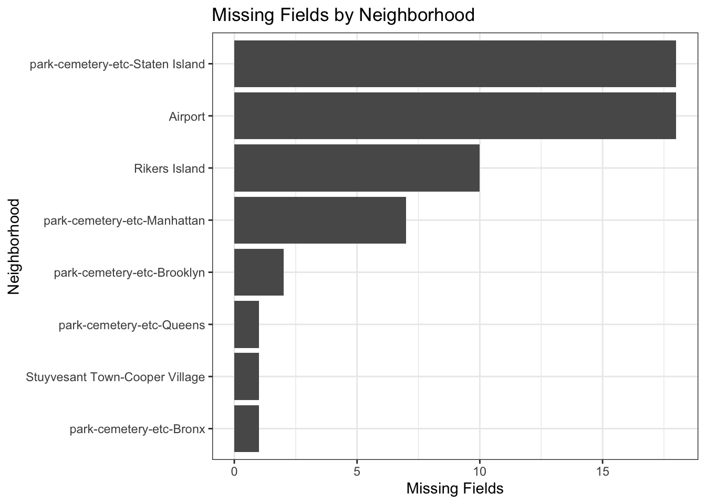

Chapter 3 Data
3.1 Sources
3.1.1 Neighborhood Internet Infrastructure Data
3.1.1.1 Overview
We used NYC’s Internet Master Plan: Adoption and Infrastructure Data by Neighborhood data to look at dozens of variables related to Internet speed, reliability, usage, and physical infrastructure at a neighborhood level. Collected by NYC’s Office of Technology and Innovation (OTI), this dataset contains detailed breakdowns of the state of Internet infrastructure and usage by city-recognized neighborhood. These range from obvious indicators of Internet usage (“Mobile Dependent Households (Percentage of Households)”) to detailed accountings of infrastructure (“Number of Free Public Wi-Fi Access Points in a Pedestrian Corridor”) to really detailed accountings of infrastructure (“Density of Poles Reserved and with Equipment Installed for Mobile Telecom Franchise”). As most digital public infrastructure must go through OTI for permits and oversight, we expect this data to offer an accurate accounting of the city’s digital infrastructure. Furthermore, since OTI last updated this dataset in March of 2021, we expect this dataset to offer insights into Internet access during the Covid-19 pandemic, when the importance of online connectivity was at an all-time high.
3.1.1.2 Details
Overall size: 195 neighborhood rows by 77 feature columns
Online availability: .csv file on NYC OpenData
Provider: NYC Office of Technology and Innovation (OTI)
Owner: NYC OpenData
Update Frequency: Annually
Date Made Public: December 9, 2019
Metadata Last Updated: September 23, 2022
3.1.2 Neighborhood Sociological, Demographic, Housing, and Economic Data
3.1.2.1 Overview
In order to understand more about the neighborhoods making up the rows of the Internet Master Plan dataset, we combined it with NYC’s Demographic Profiles of ACS 5 Year Estimates at the Neighborhood Tabulation Area (NTA) level. Collected by the Department of City Planning (DCP), this dataset describes in detail the unique demographic, economic, housing, and social characteristics of every neighborhood within the Five Boroughs. Keyed on the same Neighborhood Tabulation Area codes as the Internet dataset, this data answers questions about each neighborhood’s racial, ethnic, and linguistic diversity; their income and wealth distributions; their housing stock, rents, and densities; and their familial, educational, and disability characteristics.
These categorical and continuous variables will add valuable context to each neighborhood’s Internet availability and adoption — giving us an opportunity to explore and visualize patterns and correlations between the two. One limitation of this dataset is its recency. Aggregated over five years in the mid 2010s, this data is 5 years staler than the Internet Master Plan data. While this may bias our findings as they relate to neighborhoods that have undergone rapid demographic change during that interval, we do not expect this to invalidate our overall findings. We considered using more recent neighborhood characteristic datasets, however these were not broken down along the same neighborhood boundaries as the Internet infrastructure dataset. This caused a messy join resulting in unnecessarily missing data. For this reason, we elected to use the slightly staler data which joined perfectly with the rows of the Internet dataset.
3.1.2.2 Details
Overall size:
Demographic: 195 neighborhood rows by 484 feature columns
Economic: 195 neighborhood rows by 659 feature columns
Housing: 195 neighborhood rows by 524 feature columns
Sociological: 195 neighborhood rows by 2,714 feature columns
Provider: Department of City Planning (DCP)
Owner: NYC OpenData
Update Frequency: Annually
Date Made Public: May 29, 2018
Last Updated: March 4, 2020
There are several causes for the high width of these datasets:
Nearly every characteristic has 4 versions: a raw count, a margin of error, a percentage of overall neighborhood population, and a margin of error of the percentage.
Many features, especially in the sociological dataset, are broken down on a per-factor level. In the most extreme case, this results in 4 columns (raw, percentage, and margins of error) for every country from which a New Yorker has emigrated.
3.2 Data Cleaning/Transformation
We intentionally chose these datasets because of their interoperability. Because they use the same neighborhood definitions and unique identifiers, cleaning and joining these two datasets together was a relatively straightforward process. The code for this cleaning/transformation is located in /preprocessing.ipynb. Data can be found in /data/raw/ and data/clean/.
3.2.1 Cleaning Up Join Columns
The Internet Dataset calls each neighborhood’s unique code a “Neighborhood Tabulation Area Code (NTA Code)”, while the housing/economic/demographic/social dataset refers to it as a “GeoID”. Due to the former’s unwieldiness, we regularized both to use “GeoID”. We also standardized both to use “Borough” rather than “Borough Name”. Finally, we changed all instances of “Borough”: “Bronx” to be “The Bronx” in the Internet dataset to match the style of the socioeconomic data. The result was a series of simple left joins between 5 dataframes with perfectly matching “GeoID” and “Borough” columns.
3.2.2 Feature Reduction
Joining these datasets together as-is resulted in over 4,000 columns. As previously discussed, many of these were factor-level breakdowns of high-cardinality categorical variables (such as country of origin or language spoken at home). Most of these were not useful for our analysis, and so we decided to prune and aggregate them into data we could analyze easily in R. In general, we settled on using predominantly percentage-based variables whenever appropriate in order to better compare across neighborhoods. We also created several new columns by aggregating across existing ones. In general, this was done to assign each neighborhood a single value/category where it previously had several factor-level breakdowns, in order to better compare across neighborhoods.
3.2.3 Internet
Of the 77 columns in the Internet dataset, we settled on the following columns for our analysis:
“GeoID”
“Borough”
“neighborhood_name”
“Total Population”
“Population Density (per Sq. Mi.)”
“Total Number of Households”
“Home Broadband Adoption %”
“Mobile Broadband Adoption %”
“Mobile Dependent Households %”
“Residential Broadband Choice Average by NTA”
“Blocks with ISP Reported Speed Availability of >=900 Mbps %”
“Public Wi-Fi in NYC Count”
“NYC Internet Master Plan Open Access Infrastructure Cost Comparison Coefficient”
3.2.4 Sociological
Of the 2,714 columns in the Sociological dataset, we settled on the following columns for our analysis:
“GeoID”
“Borough”
“English only language %”
“Language other than English %”
“Native born in US %”
“Foreign born %”
“Completed Bachelors degree or higher %”
3.2.5 Demographic
Of the 484 columns in the Demographic dataset, we settled on the following columns for our analysis:
“GeoID”
“Borough”
“Population under 18 years %”
“Population over 64 years %”
as well as a new column we created, “plurality_racial_group”, which we made by finding the highest-population racial group in each neighborhood. In effect, this converted 6 numerical columns into one categorical one.
3.2.6 Economic
Of the 659 columns in the Economic dataset, we settled on the following columns for our analysis:
“GeoID”
“Borough”
“Per Capita Income (in $)”
“Families below poverty level %”
“Population employed in labor force %”
as well as two new columns we created, “Work from Home - Capable” and “Work from Home - Incapable”, by adding up the proportions of workers in roles we deemed potentially doable from home via the Internet. We settled on management, business, sciences, arts, sales, and office workers as being WFH-capable and service, natural resources, construction, maintenance, production, and transportation workers as being WFH-incapable. We recognize that not all workers in the former can or do work from home, while some in the latter may.
3.3 Missing Value Analysis

Only 8 neighborhoods are missing any data in our chosen fields. Of them, 5 are the boroughs’ parks/cemeteries, one is the city’s airports, and one is the city’s primary jail, Rikers Island. These are clearly not normal neighborhoods with normal neighborhood populations, so these omissions are logical. Stuyvesant Town-Cooper Village, the centrally designed complex of apartments in the Lower East Side unique for its lack of adherence to the Manhattan street grid, is an entirely rental apartment complex. As such, it has no median home price.